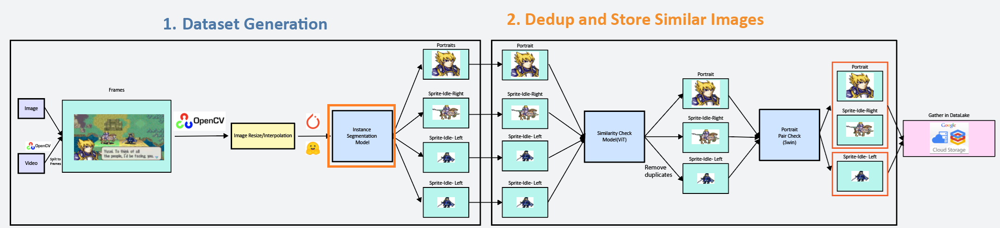
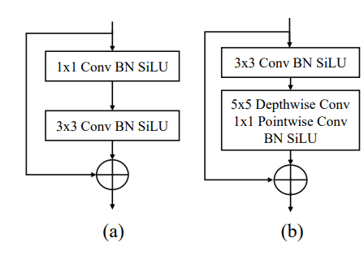
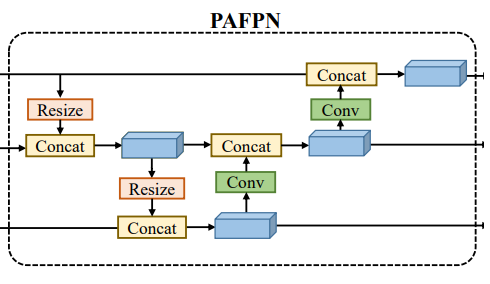
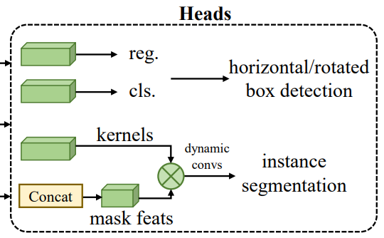
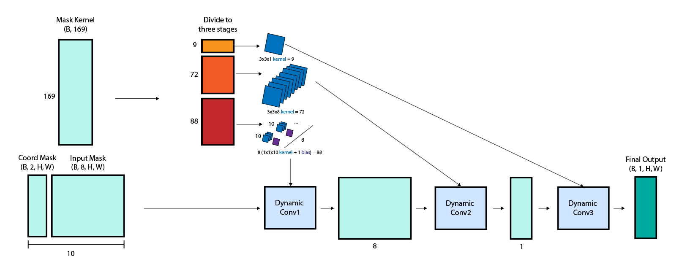

Implementing Instance Segmentation Model From Basic Pytorch: Segformer
I’m currently working on a pixel sprite detection pipeline called nino :

For the segmentation model, I chose to implement RTMDet-Ins, because
- I haven’t used this model before, so it will be a good chance to learn about it
- It is the current SOTA model for instance segmentation in real time.
0. Overview

- Need custom CSP backbone blocks
- PAFPN
- Heads for various tasks
seems simple.
1. Implement Custom CSP
RTMDet uses 5x5 conv layer bottleneck blocks like the below image’s figure 3.b:

The CSP layer puts input through a 1x1 or 3x3 with 2 stride CNN layer depending on whether to downsampling or not. All can be easily implemented by torch components.
from torch import nn
class RTMDetBottleneck(nn.Module):
"""RTMDet Bottleneck Block Layer
Uses 5x5 depthwise Convolution layer and a Pointwise 1x1 Convolution layer
Preserves
"""
def __init__(self, in_channels):
super().__init__()
self.in_channels = in_channels
self.out_channels = in_channels
self.conv1 = nn.Conv2d(self.in_channels, self.out_channels, kernel_size=3, stride=1, padding=1)
self.batch_norm1 = nn.BatchNorm2d(self.out_channels)
self.silu = nn.SiLU()
# groups=self.out_channels for depthwise convolution
self.conv2 = nn.Sequential(
nn.Conv2d(self.out_channels, self.out_channels, kernel_size=5, stride=1, groups=self.out_channels, padding=2),
nn.Conv2d(self.out_channels, self.out_channels, kernel_size=1, stride=1),
)
self.batch_norm2 = nn.BatchNorm2d(self.out_channels)
def forward(self, x):
x = self.conv1(x)
x = self.batch_norm1(x)
x = self.silu(x)
x = self.conv2(x)
x = self.batch_norm2(x)
x = self.silu(x)
return x
class RTMDetCSPBlock(nn.Module):
"""RTMDet CSP Block Layer
Uses rtmdet bottleneck layer.
Input:
x: torch.Tensor, shape: (B, C, H, W)
Output:
x: torch.Tensor, shape: (B, C', H', W')
"""
def __init__(self, in_channels, out_channels, downsample=False):
super().__init__()
self.in_channels = in_channels
self.out_channels = out_channels
if downsample:
self.conv = nn.Conv2d(self.in_channels, self.in_channels, kernel_size=3, stride=2, padding=1)
else:
self.conv = nn.Conv2d(self.in_channels, self.in_channels, kernel_size=1, stride=1)
self.bottleneck = RTMDetBottleneck(in_channels=in_channels)
self.merge_conv = nn.Conv2d(self.in_channels * 2, self.out_channels, kernel_size=1, stride=1)
def forward(self, x):
x = self.conv(x)
x_bottleneck = self.bottleneck(x)
x_concat = torch.cat([x, x_bottleneck], dim=1)
x_merged = self.merge_conv(x_concat)
return x_merged
2. PAFPN

Paper doesn’t explain in detail. Resize is probably interpolation/downsampling into CSP Block. PAFPN upsampling isn’t done using transpose CNN layers. Instead we use manual upsample function from Pytorch.
"""Implementation of the RTMDet PAFPN Block
Explained in the paper: https://paperswithcode.com/paper/rtmdet-an-empirical-study-of-designing-real
"""
import torch.nn as nn
class PAFPN(nn.Module):
"""PAFPN Block
A feature pyramid model first introduced in https://paperswithcode.com/method/pafpn
in_channels: Channel of C3, the layer with least channel. C4, C5 have *2, *4 channels respectively.
"""
def __init__(self, in_channels, out_channels):
super().__init__()
self.c5_reduce = nn.Conv2d(in_channels=in_channels * 4, out_channels=out_channels, kernel_size=1, stride=1, padding=0)
self.c4_reduce = nn.Conv2d(in_channels=in_channels * 2, out_channels=out_channels, kernel_size=1, stride=1, padding=0)
self.c3_reduce = nn.Conv2d(in_channels=in_channels, out_channels=out_channels, kernel_size=1, stride=1, padding=0)
self.c4_csp_up = RTMDetCSPBlock(in_channels=out_channels * 2, out_channels=out_channels, downsample=False)
self.c3_csp_up = RTMDetCSPBlock(in_channels=out_channels * 2, out_channels=out_channels, downsample=False)
self.c3_csp_down = RTMDetCSPBlock(in_channels=out_channels, out_channels=out_channels, downsample=True)
self.c4_csp_down = RTMDetCSPBlock(in_channels=out_channels * 2, out_channels=out_channels, downsample=True)
self.c3_out = RTMDetCSPBlock(in_channels=out_channels, out_channels=out_channels, downsample=False)
self.c4_out = RTMDetCSPBlock(in_channels=out_channels * 2, out_channels=out_channels, downsample=False)
self.c5_out = RTMDetCSPBlock(in_channels=out_channels * 2, out_channels=out_channels, downsample=False)
def forward(self, c3, c4, c5):
"""Receives 3 feature maps from the CSPBackbone
Input: 3 feature maps
c3, c4, c5 all in image format (B, C, H, W)
Output: 3 feature maps
c3_concat, c4_concat, c5_concat all in image format (B, C, H, W)
"""
p5 = self.c5_reduce(c5)
p4 = self.c4_reduce(c4)
p3 = self.c3_reduce(c3)
# 1. Downward concatenation
p5_up = F.interpolate(p5, size=p4.shape[2:], mode='bilinear')
p4_plus = torch.cat([p5_up, p4], dim=1)
p4_up = self.c4_csp_up(p4_plus)
p4_up_up = F.interpolate(p4_up, size=p3.shape[2:], mode='bilinear')
p3_plus = torch.cat([p4_up_up, p3], dim=1)
p3_out_temp = self.c3_csp_up(p3_plus)
# 2. Upward concatenation
p3_down = self.c3_csp_down(p3_out_temp)
p4_plus_2 = torch.cat([p3_down, p4_up], dim=1)
p4_out_temp = self.c4_csp_down(p4_plus_2)
p5_plus = torch.cat([p4_out_temp, p5], dim=1)
p3_out = self.c3_out(p3_out_temp)
p4_out = self.c4_out(p4_plus_2)
p5_out = self.c5_out(p5_plus)
return p3_out, p4_out, p5_out
3. Detection Head

Detection head doesn’t have a clear explanation also, so we’ll have to make some assumptions.
-
labels are calculated separately for P3, P4, P5
- P3 is usually 8 stride(grid 8x8), P4 is 16, and P5 is 32
- Making predictions on all three pyramids make model more flexible to object size, being able to detect objects that are better detected on different grid sizes
-
Translating (88, 72, 9) kernel shape to kernel
- Kernel mask has a total of 10 channels
- 1x1 Conv Layer with bias, for 8 output layers makes
(1 * 10 + 1) * 8 = 88. - 3x3 Conv Layer without bias, for 1 output layer makes
(9 * 8) * 1 = 72 - 3x3 Conv Layer without bias, for 1 output layer makes
(9) * 1 = 9
To sum it up, the instance mask will have the following structure:

The mask calculation will be done as a postprocess after the detection head, since it is done only for valid prediction objects after the confidence threshold and nms algorithms. so the role of the head will be to create the building blocks for generating the actual prediction:
- The classification output: which will output the probability of having a bounding box of each class at each grid
- The bounding box regression output: which will output the expected bounding box in the form of (offset_of_bbox_center_x_from_grid, offset_of_bbox_center_y_from_grid, width, height)
- Mask kernel(169 channel convolution output) and Mask feature(8 features + 2 coordinate channels = 10 channels)
"""Implements RTMDet Head for object detection and instance segmentation
Based on Paper: https://arxiv.org/pdf/2212.07784v2
"""
import torch
import torch.nn as nn
import torch.nn.functional as F
class RTMDetHead(nn.Module):
"""RTMDet Head for object detection and instance segmentation
Contains:
1. Classification Head
2. Regression Head
3. Mask Head (for instance segmentation)
"""
MASK_FEATURES = 8
MASK_KERNEL_FEATURES = 169
def __init__(self,
in_channels,
feat_channels=256,
num_classes=80,
stacked_convs=2,
):
super().__init__()
self.in_channels = in_channels
self.feat_channels = feat_channels
self.num_classes = num_classes
self.stacked_convs = stacked_convs
# Classification Head
cls_convs = []
for i in range(self.stacked_convs):
chn = self.in_channels if i == 0 else self.feat_channels
cls_convs.append(
nn.Conv2d(chn, self.feat_channels, kernel_size=3, padding=1))
cls_convs.append(nn.BatchNorm2d(self.feat_channels))
cls_convs.append(nn.SiLU(inplace=True))
self.cls_convs = nn.Sequential(*cls_convs)
self.cls_out = nn.Conv2d(self.feat_channels, self.num_classes, kernel_size=1)
# Regression Head
reg_convs = []
for i in range(self.stacked_convs):
chn = self.in_channels if i == 0 else self.feat_channels
reg_convs.append(
nn.Conv2d(chn, self.feat_channels, kernel_size=3, padding=1))
reg_convs.append(nn.BatchNorm2d(self.feat_channels))
reg_convs.append(nn.SiLU(inplace=True))
self.reg_convs = nn.Sequential(*reg_convs)
self.reg_out = nn.Conv2d(self.feat_channels, 4, kernel_size=1)
# Mask Head
self.mask_kernel_convs = nn.Sequential(
nn.Conv2d(self.in_channels, self.feat_channels, kernel_size=3, padding=1),
nn.BatchNorm2d(self.feat_channels),
nn.SiLU(inplace=True),
nn.Conv2d(self.feat_channels, self.feat_channels, kernel_size=3, padding=1),
nn.BatchNorm2d(self.feat_channels),
nn.SiLU(inplace=True),
nn.Conv2d(self.feat_channels, self.MASK_KERNEL_FEATURES, kernel_size=1)
)
self.mask_feat_convs = nn.Sequential(
nn.Conv2d(self.in_channels, self.feat_channels, kernel_size=3, padding=1),
nn.BatchNorm2d(self.feat_channels),
nn.SiLU(inplace=True),
nn.Conv2d(self.feat_channels, self.feat_channels, kernel_size=3, padding=1),
nn.BatchNorm2d(self.feat_channels),
nn.SiLU(inplace=True),
nn.Conv2d(self.feat_channels, self.feat_channels, kernel_size=3, padding=1),
nn.BatchNorm2d(self.feat_channels),
nn.SiLU(inplace=True),
nn.Conv2d(self.feat_channels, self.feat_channels, kernel_size=3, padding=1),
nn.BatchNorm2d(self.feat_channels),
nn.SiLU(inplace=True),
nn.Conv2d(self.feat_channels, self.MASK_FEATURES, kernel_size=1)
)
def _forward_single_level(self, x):
cls_feat = self.cls_convs(x)
cls_score = self.cls_out(cls_feat)
reg_feat = self.reg_convs(x)
bbox_pred = self.reg_out(reg_feat)
mask_kernels = self.mask_kernel_convs(x)
mask_feats = self.mask_feat_convs(x)
mask_feats = torch.concat([mask_feats, self.create_coord_features(x.size(0), x.size(2), x.size(3))], dim=1)
assert mask_feats.size(1) == self.MASK_FEATURES + 2
assert mask_kernels.size(1) == self.MASK_KERNEL_FEATURES
return cls_score, bbox_pred, mask_kernels, mask_feats
@staticmethod
def create_coord_features(n_batch, w, h):
x_range = torch.linspace(-1, 1, w)
y_range = torch.linspace(-1, 1, h)
y, x = torch.meshgrid(y_range, x_range, indexing='ij')
coord_features_batch = torch.stack([x, y], dim=0).unsqueeze(0).expand(n_batch, -1, -1, -1)
return coord_features_batch
def forward(self, feats):
"""Gets input from P3, P4, P5 and gives outputs needed for creating predictions.
Args:
feats: P3, P4, P5 output from PAFPN
Returns:
cls_scores: has n_classes predictions for every P3/P4/P5 pixels
bbox_preds: has n_classes * 4 predictions for every P3/P4/P5 pixels, one bbox
prediction is of format (center_dx_from_grid, center_dy_from_grid, w, h)
mask_kernels: (B, MASK_KERNEL_FEATURES, H, W)
mask_feats: (B, MASK_FEATURES + 2, H, W)
"""
cls_scores = []
bbox_preds = []
mask_kernels_list = []
mask_feats_list = []
for feat in feats:
cls_score, bbox_pred, mask_kernels, mask_feats = self._forward_single_level(feat)
mask_kernels_list.append(mask_kernels)
mask_feats_list.append(mask_feats)
cls_scores.append(cls_score)
bbox_preds.append(bbox_pred)
return cls_scores, bbox_preds, mask_kernels_list, mask_feats_list
Conclusion
This implements all the backbone/neck/head building blocks of the model. There is still more to be done:
- Preprocess: Loading COCO format dataset as label, data augmentation
- Translation: Translate label coordinates to grid/offset in P3/P4/P5 coordinates.
- PostProcess: nms + confidence threshold to remove incompetent predictions, mapping predictions to ground truth, mask dynamic CNN logic
- Debugging: Showing image with masks overlapped.
All these will be handled in separate pages.